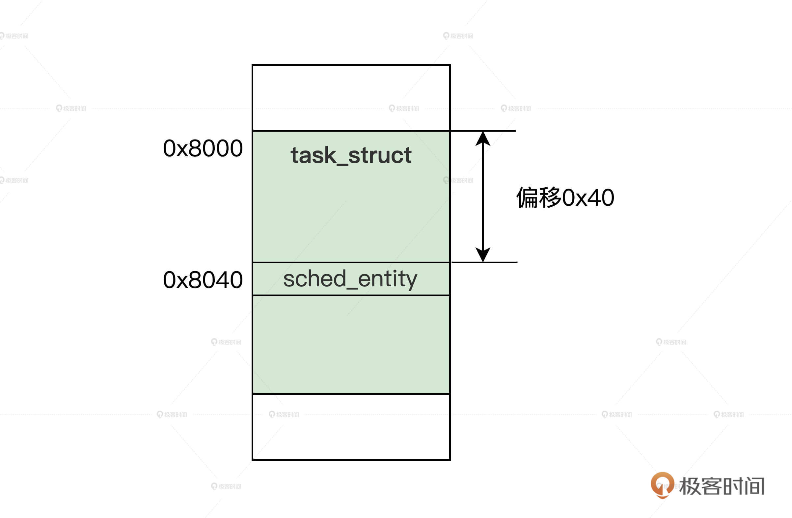

- 00 开篇词 为什么要学写一个操作系统？.md.html
- 00 编辑手记 升级认知，迭代自己的操作系统.md.html
- 01 程序的运行过程：从代码到机器运行.md.html
- 02 几行汇编几行C：实现一个最简单的内核.md.html
- 03 黑盒之中有什么：内核结构与设计.md.html
- 04 震撼的Linux全景图：业界成熟的内核架构长什么样？.md.html
- 05 CPU工作模式：执行程序的三种模式.md.html
- 06 虚幻与真实：程序中的地址如何转换？.md.html
- 07 Cache与内存：程序放在哪儿？.md.html
- 08 锁：并发操作中，解决数据同步的四种方法.md.html
- 09 瞧一瞧Linux：Linux的自旋锁和信号量如何实现？.md.html
- 10 设置工作模式与环境（上）：建立计算机.md.html
- 11 设置工作模式与环境（中）：建造二级引导器.md.html
- 12 设置工作模式与环境（下）：探查和收集信息.md.html
- 13 第一个C函数：如何实现板级初始化？.md.html
- 14 Linux初始化（上）：GRUB与vmlinuz的结构.md.html
- 15 Linux初始化（下）：从_start到第一个进程.md.html
- 16 划分土地（上）：如何划分与组织内存？.md.html
- 17 划分土地（中）：如何实现内存页面初始化？.md.html
- 18 划分土地（下）：如何实现内存页的分配与释放？.md.html
- 19 土地不能浪费：如何管理内存对象？.md.html
- 20 土地需求扩大与保障：如何表示虚拟内存？.md.html
- 21 土地需求扩大与保障：如何分配和释放虚拟内存？.md.html
- 22 瞧一瞧Linux：伙伴系统如何分配内存？.md.html
- 23 瞧一瞧Linux：SLAB如何分配内存？.md.html
- 24 活动的描述：到底什么是进程？.md.html
- 25 多个活动要安排（上）：多进程如何调度？.md.html
- 26 多个活动要安排（下）：如何实现进程的等待与唤醒机制？.md.html
- 27 瞧一瞧Linux：Linux如何实现进程与进程调度_.md.html
- 28 部门分类：如何表示设备类型与设备驱动？.md.html
- 29 部门建立：如何在内核中注册设备？.md.html
- 30 部门响应：设备如何处理内核I_O包？.md.html
- 31 瞧一瞧Linux：如何获取所有设备信息？.md.html
- 32 仓库结构：如何组织文件_.md.html
- 33 仓库划分：文件系统的格式化操作.md.html
- 34 仓库管理：如何实现文件的六大基本操作？.md.html
- 35 瞧一瞧Linux：虚拟文件系统如何管理文件？.md.html
- 36 从URL到网卡：如何全局观察网络数据流动？.md.html
- 37 从内核到应用：网络数据在内核中如何流转.md.html
- 38 从单排到团战：详解操作系统的宏观网络架构.md.html
- 39 瞧一瞧Linux：详解socket实现与网络编程接口.md.html
- 40 瞧一瞧Linux：详解socket的接口实现.md.html
- 41 服务接口：如何搭建沟通桥梁？.md.html
- 42 瞧一瞧Linux：如何实现系统API？.md.html
- 43 虚拟机内核：KVM是什么？.md.html
- 44 容器：如何理解容器的实现机制？.md.html
- 45 ARM新宠：苹果的M1芯片因何而快？.md.html
- 46 AArch64体系：ARM最新编程架构模型剖析.md.html
- LMOS来信：第二季课程带你“手撕”计算机基础.md.html
- 大咖助场 以无法为有法，以无限为有限.md.html
- 用户故事 yiyang：我的上机实验“爬坑指南”.md.html
- 用户故事 成为面向“知识库”的工程师.md.html
- 用户故事 技术人如何做选择，路才越走越宽？.md.html
- 用户故事 操作系统发烧友：看不懂？因为你没动手.md.html
- 用户故事 用好动态调试，助力课程学习.md.html
- 用户故事 艾同学：路虽远，行则将至.md.html
- 结束语 生活可以一地鸡毛，但操作系统却是心中的光.md.html
- 捐赠
27 瞧一瞧Linux：Linux如何实现进程与进程调度_
你好，我是LMOS。
在前面的课程中，我们已经写好了Cosmos的进程管理组件，实现了多进程调度运行，今天我们一起探索Linux如何表示进程以及如何进行多进程调度。
好了，话不多说，我们开始吧。
Linux如何表示进程
在Cosmos中，我们设计了一个thread_t数据结构来代表一个进程，Linux也同样是用一个数据结构表示一个进程。
下面我们先来研究Linux的进程数据结构，然后看看Linux进程的地址空间数据结构，最后再来理解Linux的文件表结构。
Linux进程的数据结构
Linux系统下，把运行中的应用程序抽象成一个数据结构task_struct，一个应用程序所需要的各种资源，如内存、文件等都包含在task_struct结构中。
因此，task_struct结构是非常巨大的一个数据结构，代码如下。
struct task_struct {
struct thread_info thread_info;//处理器特有数据
volatile long state; //进程状态
void *stack; //进程内核栈地址
refcount_t usage; //进程使用计数
int on_rq; //进程是否在运行队列上
int prio; //动态优先级
int static_prio; //静态优先级
int normal_prio; //取决于静态优先级和调度策略
unsigned int rt_priority; //实时优先级
const struct sched_class *sched_class;//指向其所在的调度类
struct sched_entity se;//普通进程的调度实体
struct sched_rt_entity rt;//实时进程的调度实体
struct sched_dl_entity dl;//采用EDF算法调度实时进程的调度实体
struct sched_info sched_info;//用于调度器统计进程的运行信息
struct list_head tasks;//所有进程的链表
struct mm_struct *mm; //指向进程内存结构
struct mm_struct *active_mm;
pid_t pid; //进程id
struct task_struct __rcu *parent;//指向其父进程
struct list_head children; //链表中的所有元素都是它的子进程
struct list_head sibling; //用于把当前进程插入到兄弟链表中
struct task_struct *group_leader;//指向其所在进程组的领头进程
u64 utime; //用于记录进程在用户态下所经过的节拍数
u64 stime; //用于记录进程在内核态下所经过的节拍数
u64 gtime; //用于记录作为虚拟机进程所经过的节拍数
unsigned long min_flt;//缺页统计
unsigned long maj_flt;
struct fs_struct *fs; //进程相关的文件系统信息
struct files_struct *files;//进程打开的所有文件
struct vm_struct *stack_vm_area;//内核栈的内存区
};
为了帮你掌握核心思路，关于task_struct结构体，我省略了进程的权能、性能跟踪、信号、numa、cgroup等相关的近500行内容，你若有兴趣可以自行阅读，这里你只需要明白，在内存中，一个task_struct结构体的实例变量代表一个Linux进程就行了。
创建task_struct结构
Linux创建task_struct结构体的实例变量，这里我们只关注早期和最新的创建方式。
Linux早期是这样创建task_struct结构体的实例变量的：找伙伴内存管理系统，分配两个连续的页面（即8KB），作为进程的内核栈，再把task_struct结构体的实例变量，放在这8KB内存空间的开始地址处。内核栈则是从上向下伸长的，task_struct数据结构是从下向上伸长的。
我给你画幅图，你就明白了。
从图中不难发现，Linux把task_struct结构和内核栈放在了一起 ，所以我们只要把RSP寄存器的值读取出来，然后将其低13位清零，就得到了当前task_struct结构体的地址。由于内核栈比较大，而且会向下伸长，覆盖掉task_struct结构体内容的概率就很小。
随着Linux版本的迭代，task_struct结构体的体积越来越大，从前task_struct结构体和内核栈放在一起的方式就不合适了。最新的版本是分开放的，我们一起来看看后面的代码。
static unsigned long *alloc_thread_stack_node(struct task_struct *tsk, int node)
{
struct page *page = alloc_pages_node(node, THREADINFO_GFP,
THREAD_SIZE_ORDER);//分配两个页面
if (likely(page)) {
tsk->stack = kasan_reset_tag(page_address(page));
return tsk->stack;//让task_struct结构的stack字段指向page的地址
}
return NULL;
}
static inline struct task_struct *alloc_task_struct_node(int node)
{
return kmem_cache_alloc_node(task_struct_cachep, GFP_KERNEL, node);//在task_struct_cachep内存对象中分配一个task_struct结构休对象
}
static struct task_struct *dup_task_struct(struct task_struct *orig, int node)
{
struct task_struct *tsk; unsigned long *stack;
tsk = alloc_task_struct_node(node);//分配task_struct结构体
if (!tsk)
return NULL;
stack = alloc_thread_stack_node(tsk, node);//分配内核栈
tsk->stack = stack;
return tsk;
}
static __latent_entropy struct task_struct *copy_process(
struct pid *pid, int trace, int node,
struct kernel_clone_args *args)
{
int pidfd = -1, retval;
struct task_struct *p;
//……
retval = -ENOMEM;
p = dup_task_struct(current, node);//分配task_struct和内核栈
//……
return ERR_PTR(retval);
}
pid_t kernel_clone(struct kernel_clone_args *args)
{
u64 clone_flags = args->flags;
struct task_struct *p;
pid_t nr;
//……
//复制进程
p = copy_process(NULL, trace, NUMA_NO_NODE, args);
//……
return nr;
}
//建立进程接口
SYSCALL_DEFINE0(fork)
{
struct kernel_clone_args args = {
.exit_signal = SIGCHLD,
};
return kernel_clone(&args);
}
为了直击重点，我们不会讨论Linux的fork函数，你只要知道，它负责建立一个与父进程相同的进程，也就是复制了父进程的一系列数据，这就够了。
要复制父进程的数据必须要分配内存，上面代码的流程完整展示了从SLAB中分配task_struct结构，以及从伙伴内存系统分配内核栈的过程，整个过程是怎么回事儿，才是你要领会的重点。
Linux进程地址空间
Linux也是支持虚拟内存的操作系统内核，现在我们来看看Linux用于描述一个进程的地址空间的数据结构，它就是mm_struct结构，代码如下所示。
struct mm_struct {
struct vm_area_struct *mmap; //虚拟地址区间链表VMAs
struct rb_root mm_rb; //组织vm_area_struct结构的红黑树的根
unsigned long task_size; //进程虚拟地址空间大小
pgd_t * pgd; //指向MMU页表
atomic_t mm_users; //多个进程共享这个mm_struct
atomic_t mm_count; //mm_struct结构本身计数
atomic_long_t pgtables_bytes;//页表占用了多个页
int map_count; //多少个VMA
spinlock_t page_table_lock; //保护页表的自旋锁
struct list_head mmlist; //挂入mm_struct结构的链表
//进程应用程序代码开始、结束地址，应用程序数据的开始、结束地址
unsigned long start_code, end_code, start_data, end_data;
//进程应用程序堆区的开始、当前地址、栈开始地址
unsigned long start_brk, brk, start_stack;
//进程应用程序参数区开始、结束地址
unsigned long arg_start, arg_end, env_start, env_end;
};
同样的，mm_struct结构，我也精减了很多内容。其中的vm_area_struct结构，相当于我们之前Cosmos的kmvarsdsc_t结构（可以回看第20节课），是用来描述一段虚拟地址空间的。mm_struct结构中也包含了MMU页表相关的信息。
下面我们一起来看看，mm_struct结构是如何建立对应的实例变量呢？代码如下所示。
//在mm_cachep内存对象中分配一个mm_struct结构休对象
#define allocate_mm() (kmem_cache_alloc(mm_cachep, GFP_KERNEL))
static struct mm_struct *dup_mm(struct task_struct *tsk,
struct mm_struct *oldmm)
{
struct mm_struct *mm;
//分配mm_struct结构
mm = allocate_mm();
if (!mm)
goto fail_nomem;
//复制mm_struct结构
memcpy(mm, oldmm, sizeof(*mm));
//……
return mm;
}
static int copy_mm(unsigned long clone_flags, struct task_struct *tsk)
{
struct mm_struct *mm, *oldmm;
int retval;
tsk->min_flt = tsk->maj_flt = 0;
tsk->nvcsw = tsk->nivcsw = 0;
retval = -ENOMEM;
mm = dup_mm(tsk, current->mm);//分配mm_struct结构的实例变量
if (!mm)
goto fail_nomem;
good_mm:
tsk->mm = mm;
tsk->active_mm = mm;
return 0;
fail_nomem:
return retval;
}
上述代码的copy_mm函数正是在copy_process函数中被调用的， copy_mm函数调用dup_mm函数，把当前进程的mm_struct结构复制到allocate_mm宏分配的一个mm_struct结构中。这样，一个新进程的mm_struct结构就建立了。
Linux进程文件表
在Linux系统中，可以说万物皆为文件，比如文件、设备文件、管道文件等。一个进程对一个文件进行读写操作之前，必须先打开文件，这个打开的文件就记录在进程的文件表中，它由task_struct结构中的files字段指向。这里指向的其实是个files_struct结构，代码如下所示。
struct files_struct {
atomic_t count;//自动计数
struct fdtable __rcu *fdt;
struct fdtable fdtab;
spinlock_t file_lock; //自旋锁
unsigned int next_fd;//下一个文件句柄
unsigned long close_on_exec_init[1];//执行exec()时要关闭的文件句柄
unsigned long open_fds_init[1];
unsigned long full_fds_bits_init[1];
struct file __rcu * fd_array[NR_OPEN_DEFAULT];//默认情况下打开文件的指针数组
};
从上述代码中，可以推想出我们在应用软件中调用：int fd = open(“/tmp/test.txt”); 实际Linux会建立一个struct file结构体实例变量与文件对应，然后把struct file结构体实例变量的指针放入fd_array数组中。
那么Linux在建立一个新进程时，怎样给新进程建立一个files_struct结构呢？其实很简单，也是复制当前进程的files_struct结构，代码如下所示。
static int copy_files(unsigned long clone_flags, struct task_struct *tsk)
{
struct files_struct *oldf, *newf;
int error = 0;
oldf = current->files;//获取当前进程的files_struct的指针
if (!oldf)
goto out;
if (clone_flags & CLONE_FILES) {
atomic_inc(&oldf->count);
goto out;
}
//分配新files_struct结构的实例变量，并复制当前的files_struct结构
newf = dup_fd(oldf, NR_OPEN_MAX, &error);
if (!newf)
goto out;
tsk->files = newf;//新进程的files_struct结构指针指向新的files_struct结构
error = 0;
out:
return error;
同样的，copy_files函数由copy_process函数调用，copy_files最终会复制当前进程的files_struct结构到一个新的files_struct结构实例变量中，并让新进程的files指针指向这个新的files_struct结构实例变量。
好了，关于进程的一些数据结构，我们就了解这么多，因为现在你还无需知道Linux进程的所有细节，对于一个庞大的系统，最大的误区是陷入细节而不知全貌。这里，我们只需要知道Linux用什么代表一个进程就行了。
Linux进程调度
Linux支持多CPU上运行多进程，这就要说到多进程调度了。Linux进程调度支持多种调度算法，有基于优先级的调度算法，有实时调度算法，有完全公平调度算法（CFQ）。
下面我们以CFQ为例进行探讨，我们先了解一下CFQ相关的数据结构，随后探讨CFQ算法要怎样实现。
进程调度实体
我们先来看看什么是进程调度实体，它是干什么的呢？
它其实是Linux进程调度系统的一部分，被嵌入到了Linux进程数据结构中，与调度器进行关联，能间接地访问进程，这种高内聚低耦合的方式，保证了进程数据结构和调度数据结构相互独立，我们后面可以分别做改进、优化，这是一种高明的软件设计思想。我们来看看这个结构，代码如下所示。
struct sched_entity {
struct load_weight load;//表示当前调度实体的权重
struct rb_node run_node;//红黑树的数据节点
struct list_head group_node;// 链表节点，被链接到 percpu 的 rq->cfs_tasks
unsigned int on_rq; //当前调度实体是否在就绪队列上
u64 exec_start;//当前实体上次被调度执行的时间
u64 sum_exec_runtime;//当前实体总执行时间
u64 prev_sum_exec_runtime;//截止到上次统计，进程执行的时间
u64 vruntime;//当前实体的虚拟时间
u64 nr_migrations;//实体执行迁移的次数
struct sched_statistics statistics;//统计信息包含进程的睡眠统计、等待延迟统计、CPU迁移统计、唤醒统计等。
#ifdef CONFIG_FAIR_GROUP_SCHED
int depth;// 表示当前实体处于调度组中的深度
struct sched_entity *parent;//指向父级调度实体
struct cfs_rq *cfs_rq;//当前调度实体属于的 cfs_rq.
struct cfs_rq *my_q;
#endif
#ifdef CONFIG_SMP
struct sched_avg avg ;// 记录当前实体对于CPU的负载
#endif
};
上述代码的信息量很多，但是我们现在不急于搞清楚所有的信息，我们现在需要知道的是在task_struct结构中，会包含至少一个sched_entity结构的变量，如下图所示。

结合图示，我们只要通过sched_entity结构变量的地址，减去它在task_struct结构中的偏移（由编译器自动计算），就能获取到task_struct结构的地址。这样就能达到通过sched_entity结构，访问task_struct结构的目的了。
进程运行队列
那么，在Linux中，又是怎样组织众多调度实体，进而组织众多进程，方便进程调度器找到调度实体呢？
首先，Linux定义了一个进程运行队列结构，每个CPU分配一个这样的进程运行队列结构实例变量，进程运行队列结构的代码如下。
struct rq {
raw_spinlock_t lock;//自旋锁
unsigned int nr_running;//多个就绪运行进程
struct cfs_rq cfs; //作用于完全公平调度算法的运行队列
struct rt_rq rt;//作用于实时调度算法的运行队列
struct dl_rq dl;//作用于EDF调度算法的运行队列
struct task_struct __rcu *curr;//这个运行队列当前正在运行的进程
struct task_struct *idle;//这个运行队列的空转进程
struct task_struct *stop;//这个运行队列的停止进程
struct mm_struct *prev_mm;//这个运行队列上一次运行进程的mm_struct
unsigned int clock_update_flags;//时钟更新标志
u64 clock; //运行队列的时间
//后面的代码省略
};
以上这个rq结构结构中，很多我们不需要关注的字段我已经省略了。你要重点理解的是，其中task_struct结构指针是为了快速访问特殊进程，而rq结构并不直接关联调度实体，而是包含了cfs_rq、rt_rq、dl_rq，通过它们来关联调度实体。
有三个不同的运行队列，是因为作用于三种不同的调度算法。我们这里只需要关注cfs_rq，代码我列在了后面。
struct rb_root_cached {
struct rb_root rb_root; //红黑树的根
struct rb_node *rb_leftmost;//红黑树最左子节点
};
struct cfs_rq {
struct load_weight load;//cfs_rq上所有调度实体的负载总和
unsigned int nr_running;//cfs_rq上所有的调度实体不含调度组中的调度实体
unsigned int h_nr_running;//cfs_rq上所有的调度实体包含调度组中所有调度实体
u64 exec_clock;//当前 cfs_rq 上执行的时间
u64 min_vruntime;//最小虚拟运行时间
struct rb_root_cached tasks_timeline;//所有调度实体的根
struct sched_entity *curr;//当前调度实体
struct sched_entity *next;//下一个调度实体
struct sched_entity *last;//上次执行过的调度实体
//省略不关注的代码
};
为了简化问题，上述代码中我省略了调度组和负载相关的内容。你也许已经看出来了，其中load、exec_clock、min_vruntime、tasks_timeline字段是CFS调度算法得以实现的关键，你甚至可以猜出所有的调度实体，都是通过红黑树组织起来的，即cfs_rq结构中的tasks_timeline字段。
调度实体和运行队列的关系
相信我，作为初学者，了解数据结构之间的组织关系，这远比了解一个数据结构所有字段的作用和细节重要得多。
通过前面的学习，我们已经了解了rq、cfs_rq、rb_root_cached、sched_entity、task_struct等数据结构，下面我们来看看它的组织关系，我特意为你准备了后面这幅图。

结合图片我们发现，task_struct结构中包含了sched_entity结构。sched_entity结构是通过红黑树组织起来的，红黑树的根在cfs_rq结构中，cfs_rq结构又被包含在rq结构，每个CPU对应一个rq结构。这样，我们就把所有运行的进程组织起来了。
调度器类
从前面的rq数据结构中，你已经发现了，Linux是同时支持多个进程调度器的，不同的进程挂载到不同的运行队列中，如rq结构中的cfs、rt、dl，然后针对它们这些结构，使用不同的调度器。
为了支持不同的调度器，Linux定义了调度器类数据结构，它定义了一个调度器要实现哪些函数，代码如下所示。
struct sched_class {
//向运行队列中添加一个进程，入队
void (*enqueue_task) (struct rq *rq, struct task_struct *p, int flags);
//向运行队列中删除一个进程，出队
void (*dequeue_task) (struct rq *rq, struct task_struct *p, int flags);
//检查当前进程是否可抢占
void (*check_preempt_curr)(struct rq *rq, struct task_struct *p, int flags);
//从运行队列中返回可以投入运行的一个进程
struct task_struct *(*pick_next_task)(struct rq *rq);
} ;
这个sched_class结构定义了一组函数指针，为了让你抓住重点，这里我删除了调度组和负载均衡相关的函数指针。Linux系统一共定义了五个sched_class结构的实例变量，这五个sched_class结构紧靠在一起，形成了sched_class结构数组。
为了找到相应的sched_class结构实例，可以用以下代码遍历所有的sched_class结构实例变量。
//定义在链接脚本文件中
extern struct sched_class __begin_sched_classes[];
extern struct sched_class __end_sched_classes[];
#define sched_class_highest (__end_sched_classes - 1)
#define sched_class_lowest (__begin_sched_classes - 1)
#define for_class_range(class, _from, _to) \
for (class = (_from); class != (_to); class--)
//遍历每个调度类
#define for_each_class(class) \
for_class_range(class, sched_class_highest, sched_class_lowest)
extern const struct sched_class stop_sched_class;//停止调度类
extern const struct sched_class dl_sched_class;//Deadline调度类
extern const struct sched_class rt_sched_class;//实时调度类
extern const struct sched_class fair_sched_class;//CFS调度类
extern const struct sched_class idle_sched_class;//空转调度类
这些类是有优先级的，它们的优先级是：stop_sched_class > dl_sched_class > rt_sched_class > fair_sched_class > idle_sched_class。
下面我们观察一下，CFS调度器（这个调度器我们稍后讨论）所需要的 fair_sched_class，代码如下所示。
const struct sched_class fair_sched_class
__section("__fair_sched_class") = {
.enqueue_task = enqueue_task_fair,
.dequeue_task = dequeue_task_fair,
.check_preempt_curr = check_preempt_wakeup,
.pick_next_task = __pick_next_task_fair,
};
我们看到这些函数指针字段都对应到了具体的函数。其实，实现一个新的调度器，就是实现这些对应的函数。好了，我们清楚了调度器类，它就是一组函数指针，不知道你发现没有，这难道不是C语言下的面向对象吗？下面，我们接着研究CFS调度器。
Linux的CFS调度器
Linux支持多种不同的进程调度器，比如RT调度器、Deadline调度器、CFS调度器以及Idle调度器。不过，这里我们仅仅讨论一下CFS调度器，也就是完全公平调度器，CFS的设计理念是在有限的真实硬件平台上模拟实现理想的、精确的多任务CPU。现在你不懂也不要紧，我们后面会讨论的。
在了解CFS核心算法之前，你需要先掌握几个核心概念。
普通进程的权重
Linux会使用CFS调度器调度普通进程，CFS调度器与其它进程调度器的不同之处在于没有时间片的概念，它是分配CPU使用时间的比例。比如，4个相同优先级的进程在一个CPU上运行，那么每个进程都将会分配25%的CPU运行时间。这就是进程要的公平。
然而事有轻重缓急，对进程来说也是一样，有些进程的优先级就需要很高。那么CFS调度器是如何在公平之下，实现“不公平”的呢？
首先，CFS调度器下不叫优先级，而是叫权重，权重表示进程的优先级，各个进程按权重的比例分配CPU时间。
举个例子，现在有A、B两个进程。进程A的权重是1024，进程B的权重是2048。那么进程A获得CPU的时间比例是1024/(1024+2048) = 33.3%。进程B获得的CPU时间比例是2048/(1024+2048)=66.7%。
因此，权重越大，分配的时间比例越大，就相当于进程的优先级越高。
有了权重之后，分配给进程的时间计算公式如下：
进程的时间 = CPU总时间 * 进程的权重/就绪队列所有进程权重之和
但是进程对外的编程接口中使用的是一个nice值，大小范围是（-20～19），数值越小优先级越大，意味着权重值越大，nice值和权重之间可以转换的。Linux提供了后面这个数组，用于转换nice值和权重。
const int sched_prio_to_weight[40] = {
/* -20 */ 88761, 71755, 56483, 46273, 36291,
/* -15 */ 29154, 23254, 18705, 14949, 11916,
/* -10 */ 9548, 7620, 6100, 4904, 3906,
/* -5 */ 3121, 2501, 1991, 1586, 1277,
/* 0 */ 1024, 820, 655, 526, 423,
/* 5 */ 335, 272, 215, 172, 137,
/* 10 */ 110, 87, 70, 56, 45,
/* 15 */ 36, 29, 23, 18, 15,
};
一个进程每降低一个nice值，就能多获得10% 的CPU时间。1024权重对应nice值为0，被称为NICE_0_LOAD。默认情况下，大多数进程的权重都是NICE_0_LOAD。
进程调度延迟
了解了进程权重，现在我们看看进程调度延迟，什么是调度延迟？其实就是保证每一个可运行的进程，都至少运行一次的时间间隔。
我们结合实例理解，系统中有3个可运行进程，每个进程都运行10ms，那么调度延迟就是30ms；如果有10个进程，那么调度延迟就是100ms；如果现在保证调度延迟不变，固定是30ms；如果系统中有3个进程，则每个进程可运行10ms；如果有10个进程，则每个进程可运行3ms。
随着进程的增加，每个进程分配的时间在减少，进程调度次数会增加，调度器占用的时间就会增加。因此，CFS调度器的调度延迟时间的设定并不是固定的。
当运行进程少于8个的时候，调度延迟是固定的6ms不变。当运行进程个数超过8个时，就要保证每个进程至少运行一段时间，才被调度。这个“至少一段时间”叫作最小调度粒度时间。
在CFS默认设置中，最小调度粒度时间是0.75ms，用变量sysctl_sched_min_granularity记录。由__sched_period函数负责计算，如下所示。
unsigned int sysctl_sched_min_granularity = 750000ULL;
static unsigned int normalized_sysctl_sched_min_granularity = 750000ULL;
static unsigned int sched_nr_latency = 8;
static u64 __sched_period(unsigned long nr_running)
{
if (unlikely(nr_running > sched_nr_latency))
return nr_running * sysctl_sched_min_granularity;
else
return sysctl_sched_latency;
}
上述代码中，参数nr_running是Linux系统中可运行的进程数量，当超过sched_nr_latency时，我们无法保证调度延迟，因此转为保证最小调度粒度。
虚拟时间
你是否还记得调度实体中的vruntime么？它就是用来表示虚拟时间的，我们先按下不表，来看一个例子。
假设幼儿园只有一个秋千，所有孩子都想玩，身为老师的你该怎么处理呢？你一定会想每个孩子玩一段时间，然后就让给别的孩子，依次类推。CFS调度器也是这样做的，它记录了每个进程的执行时间，为保证每个进程运行时间的公平，哪个进程运行的时间最少，就会让哪个进程运行。

例如，调度延迟是10ms，系统一共2个相同优先级的进程，那么各进程都将在10ms的时间内各运行5ms。
现在进程A和进程B他们的权重分别是1024和820（nice值分别是0和1）。进程A获得的运行时间是10x1024/(1024+820)=5.6ms，进程B获得的执行时间是10x820/(1024+820)=4.4ms。进程A的cpu使用比例是5.6/10x100%=56%，进程B的cpu使用比例是4.4/10x100%=44%。
很明显，这两个进程的实际执行时间是不等的，但CFS调度器想保证每个进程的运行时间相等。因此CFS调度器引入了虚拟时间，也就是说，上面的5.6ms和4.4ms经过一个公式，转换成相同的值，这个转换后的值就叫虚拟时间。这样的话，CFS只需要保证每个进程运行的虚拟时间是相等的。
虚拟时间vruntime和实际时间（wtime）转换公式如下：
vruntime = wtime*( NICE_0_LOAD/weight)
根据上面的公式，可以发现nice值为0的进程，这种进程的虚拟时间和实际时间是相等的，那么进程A的虚拟时间为：5.6*(1024⁄1024)=5.6，进程B的虚拟时间为：4.4*(1024⁄820)=5.6。虽然进程A和进程B的权重不一样，但是计算得到的虚拟时间是一样的。
所以，CFS调度主要保证每个进程运行的虚拟时间一致即可。在选择下一个即将运行的进程时，只需要找到虚拟时间最小的进程就行了。这个计算过程由calc_delta_fair函数完成，如下所示。
static u64 __calc_delta(u64 delta_exec, unsigned long weight, struct load_weight *lw)
{
u64 fact = scale_load_down(weight);
int shift = WMULT_SHIFT;
__update_inv_weight(lw);
if (unlikely(fact >> 32)) {
while (fact >> 32) {
fact >>= 1;
shift--;
}
}
//为了避免使用浮点计算
fact = mul_u32_u32(fact, lw->inv_weight);
while (fact >> 32) {
fact >>= 1;
shift--;
}
return mul_u64_u32_shr(delta_exec, fact, shift);
}
static inline u64 calc_delta_fair(u64 delta, struct sched_entity *se)
{
if (unlikely(se->load.weight != NICE_0_LOAD))
delta = __calc_delta(delta, NICE_0_LOAD, &se->load);
return delta;
}
按照上面的理论，调用__calc_delta函数的时候，传递的weight参数是NICE_0_LOAD，lw参数正是调度实体中的load_weight结构体。
到这里，我要公开一个问题，在运行队列中用红黑树结构组织进程的调度实体，这里进程虚拟时间正是红黑树的key，这样进程就以进程的虚拟时间被红黑树组织起来了。红黑树的最左子节点，就是虚拟时间最小的进程，随着时间的推移进程会从红黑树的左边跑到右，然后从右边跑到左边，就像舞蹈一样优美。
CFS调度进程
根据前面的内容，我们得知CFS调度器就是要维持各个可运行进程的虚拟时间相等，不相等就需要被调度运行。如果一个进程比其它进程的虚拟时间小，它就应该运行达到和其它进程的虚拟时间持平，直到它的虚拟时间超过其它进程，这时就要停下来，这样其它进程才能被调度运行。
定时周期调度
前面虚拟时间的方案还存在问题，你发现了么？
没错，虚拟时间就是一个数据，如果没有任何机制对它进行更新，就会导致一个进程永远运行下去，因为那个进程的虚拟时间没有更新，虚拟时间永远最小，这当然不行。
因此定时周期调度机制应运而生。Linux启动会启动定时器，这个定时器每1/1000、1/250、1/100秒（根据配置不同选取其一），产生一个时钟中断，在中断处理函数中最终会调用一个scheduler_tick函数，代码如下所示。
static void update_curr(struct cfs_rq *cfs_rq)
{
struct sched_entity *curr = cfs_rq->curr;
u64 now = rq_clock_task(rq_of(cfs_rq));//获取当前时间
u64 delta_exec;
delta_exec = now - curr->exec_start;//间隔时间
curr->exec_start = now;
curr->sum_exec_runtime += delta_exec;//累计运行时间
curr->vruntime += calc_delta_fair(delta_exec, curr);//计算进程的虚拟时间
update_min_vruntime(cfs_rq);//更新运行队列中的最小虚拟时间，这是新建进程的虚拟时间，避免一个新建进程因为虚拟时间太小而长时间占用CPU
}
static void entity_tick(struct cfs_rq *cfs_rq, struct sched_entity *curr, int queued)
{
update_curr(cfs_rq);//更新当前运行进程和运行队列相关的时间
if (cfs_rq->nr_running > 1)//当运行进程数量大于1就检查是否可抢占
check_preempt_tick(cfs_rq, curr);
}
#define for_each_sched_entity(se) \
for (; se; se = NULL)
static void task_tick_fair(struct rq *rq, struct task_struct *curr, int queued)
{
struct cfs_rq *cfs_rq;
struct sched_entity *se = &curr->se;//获取当前进程的调度实体
for_each_sched_entity(se) {//仅对当前进程的调度实体
cfs_rq = cfs_rq_of(se);//获取当前进程的调度实体对应运行队列
entity_tick(cfs_rq, se, queued);
}
}
void scheduler_tick(void)
{
int cpu = smp_processor_id();
struct rq *rq = cpu_rq(cpu);//获取运行CPU运行进程队列
struct task_struct *curr = rq->curr;//获取当进程
update_rq_clock(rq);//更新运行队列的时间等数据
curr->sched_class->task_tick(rq, curr, 0);//更新当前时间的虚拟时间
}
上述代码中，scheduler_tick函数会调用进程调度类的task_tick函数，对于CFS调度器就是task_tick_fair函数。但是真正做事的是entity_tick函数，entity_tick函数中调用了update_curr函数更新当前进程虚拟时间，这个函数我们在之前讨论过了，还更新了运行队列的相关数据。
entity_tick函数的最后，调用了check_preempt_tick函数，用来检查是否可以抢占调度，代码如下。
static void check_preempt_tick(struct cfs_rq *cfs_rq, struct sched_entity *curr)
{
unsigned long ideal_runtime, delta_exec;
struct sched_entity *se;
s64 delta;
//计算当前进程在本次调度中分配的运行时间
ideal_runtime = sched_slice(cfs_rq, curr);
//当前进程已经运行的实际时间
delta_exec = curr->sum_exec_runtime - curr->prev_sum_exec_runtime;
//如果实际运行时间已经超过分配给进程的运行时间，就需要抢占当前进程。设置进程的TIF_NEED_RESCHED抢占标志。
if (delta_exec > ideal_runtime) {
resched_curr(rq_of(cfs_rq));
return;
}
//因此如果进程运行时间小于最小调度粒度时间，不应该抢占
if (delta_exec < sysctl_sched_min_granularity)
return;
//从红黑树中找到虚拟时间最小的调度实体
se = __pick_first_entity(cfs_rq);
delta = curr->vruntime - se->vruntime;
//如果当前进程的虚拟时间仍然比红黑树中最左边调度实体虚拟时间小，也不应该发生调度
if (delta < 0)
return;
}
刚才的代码你可以这样理解，如果需要抢占就会调用resched_curr函数设置进程的抢占标志，但是这个函数本身不会调用进程调度器函数，而是在进程从中断或者系统调用返回到用户态空间时，检查当前进程的调度标志，然后根据需要调用进程调度器函数。
调度器入口
如果设计需要进行进程抢占调度，Linux就会在适当的时机进行进程调度，进程调度就是调用进程调度器入口函数，该函数会选择一个最合适投入运行的进程，然后切换到该进程上运行。
我们先来看看，进程调度器入口函数的代码长什么样。
static void __sched notrace __schedule(bool preempt)
{
struct task_struct *prev, *next;
unsigned long *switch_count;
unsigned long prev_state;
struct rq_flags rf;
struct rq *rq;
int cpu;
cpu = smp_processor_id();
rq = cpu_rq(cpu);//获取当前CPU的运行队列
prev = rq->curr; //获取当前进程
rq_lock(rq, &rf);//运行队列加锁
update_rq_clock(rq);//更新运行队列时钟
switch_count = &prev->nivcsw;
next = pick_next_task(rq, prev, &rf);//获取下一个投入运行的进程
clear_tsk_need_resched(prev); //清除抢占标志
clear_preempt_need_resched();
if (likely(prev != next)) {//当前运行进程和下一个运行进程不同，就要进程切换
rq->nr_switches++; //切换计数统计
++*switch_count;
rq = context_switch(rq, prev, next, &rf);//进程机器上下文切换
} else {
rq->clock_update_flags &= ~(RQCF_ACT_SKIP|RQCF_REQ_SKIP);
rq_unlock_irq(rq, &rf);//解锁运行队列
}
}
void schedule(void)
{
struct task_struct *tsk = current;//获取当前进程
do {
preempt_disable();//关闭内核抢占
__schedule(false);//进程调用
sched_preempt_enable_no_resched();//开启内核抢占
} while (need_resched());//是否需要再次重新调用
}
之所以在循环中调用__schedule函数执行真正的进程调度，是因为在执行调度的过程中，有些更高优先级的进程进入了可运行状态，因此它就要抢占当前进程。
__schedule函数中会更新一些统计数据，然后调用pick_next_task函数挑选出下一个进程投入运行。最后，如果当前进程和下一个要运行的进程不同，就要进行进程机器上下文切换，其中会切换地址空间和CPU寄存器。
挑选下一个进程
在__schedule函数中，获取了正在运行的进程，更新了运行队列的时钟，下面就要挑选出下一个投入运行的进程。显然，不是随便挑选一个，我们这就来看看调度器是如何挑选的。
挑选下一个运行进程这个过程，是在pick_next_task函数中完成的，如下所示。
static inline struct task_struct *pick_next_task(struct rq *rq, struct task_struct *prev, struct rq_flags *rf)
{
const struct sched_class *class;
struct task_struct *p;
//这是对CFS的一种优化处理，因为大部分进程属于CFS管理
if (likely(prev->sched_class <= &fair_sched_class &&
rq->nr_running == rq->cfs.h_nr_running)) {
p = pick_next_task_fair(rq, prev, rf);//调用CFS的对应的函数
if (unlikely(p == RETRY_TASK))
goto restart;
if (!p) {//如果没有获取到运行进程
put_prev_task(rq, prev);//将上一个进程放回运行队列中
p = pick_next_task_idle(rq);//获取空转进程
}
return p;
}
restart:
for_each_class(class) {//依次从最高优先级的调度类开始遍历
p = class->pick_next_task(rq);
if (p)//如果在一个调度类所管理的运行队列中挑选到一个进程，立即返回
return p;
}
BUG();//出错
}
你看，pick_next_task函数只是个框架函数，它的逻辑也很清楚，会依照优先级调用具体调度器类的函数完成工作，对于CFS则会调用pick_next_task_fair函数，代码如下所示。
struct task_struct *pick_next_task_fair(struct rq *rq, struct task_struct *prev, struct rq_flags *rf)
{
struct cfs_rq *cfs_rq = &rq->cfs;
struct sched_entity *se;
struct task_struct *p;
if (prev)
put_prev_task(rq, prev);//把上一个进程放回运行队列
do {
se = pick_next_entity(cfs_rq, NULL);//选择最适合运行的调度实体
set_next_entity(cfs_rq, se);//对选择的调度实体进行一些处理
cfs_rq = group_cfs_rq(se);
} while (cfs_rq);//在没有调度组的情况下，循环一次就结束了
p = task_of(se);//通过se获取包含se的进程task_struct
return p;
}
上述代码中调用pick_next_entity函数选择虚拟时间最小的调度实体，然后调用set_next_entity函数，对选择的调度实体进行一些必要的处理，主要是将这调度实体从运行队列中拿出来。
pick_next_entity函数具体要怎么工作呢？
首先，它调用了相关函数，从运行队列上的红黑树中查找虚拟时间最少的调度实体，然后处理要跳过调度的情况，最后决定挑选的调度实体是否可以抢占并返回它。
struct sched_entity *__pick_first_entity(struct cfs_rq *cfs_rq)
{
struct rb_node *left = rb_first_cached(&cfs_rq->tasks_timeline);//先读取在tasks_timeline中rb_node指针
if (!left)
return NULL;//如果为空直接返回NULL
//通过红黑树结点指针取得包含它的调度实体结构地址
return rb_entry(left, struct sched_entity, run_node);
}
static struct sched_entity *__pick_next_entity(struct sched_entity *se)
{ //获取当前红黑树节点的下一个结点
struct rb_node *next = rb_next(&se->run_node);
if (!next)
return NULL;//如果为空直接返回NULL
return rb_entry(next, struct sched_entity, run_node);
}
static struct sched_entity *pick_next_entity(struct cfs_rq *cfs_rq, struct sched_entity *curr)
{
//获取Cfs_rq中的红黑树上最左节点上调度实体，虚拟时间最小
struct sched_entity *left = __pick_first_entity(cfs_rq);
struct sched_entity *se;
if (!left || (curr && entity_before(curr, left)))
left = curr;//可能当前进程主动放弃CPU，它的虚拟时间比红黑树上的还小，所以left指向当前进程调度实体
se = left;
if (cfs_rq->skip == se) { //如果选择的调度实体是要跳过的调度实体
struct sched_entity *second;
if (se == curr) {//如果是当前调度实体
second = __pick_first_entity(cfs_rq);//选择运行队列中虚拟时间最小的调度实体
} else {//否则选择红黑树上第二左的进程节点
second = __pick_next_entity(se);
//如果次优的调度实体的虚拟时间，还是比当前的调度实体的虚拟时间大
if (!second || (curr && entity_before(curr, second)))
second = curr;//让次优的调度实体也指向当前调度实体
}
//判断left和second的虚拟时间的差距是否小于sysctl_sched_wakeup_granularity
if (second && wakeup_preempt_entity(second, left) < 1)
se = second;
}
if (cfs_rq->next && wakeup_preempt_entity(cfs_rq->next, left) < 1) {
se = cfs_rq->next;
} else if (cfs_rq->last && wakeup_preempt_entity(cfs_rq->last, left) < 1) {
se = cfs_rq->last;
}
clear_buddies(cfs_rq, se);//需要清除掉last、next、skip指针
return se;
}
代码的调用路径最终会返回到__schedule函数中，这个函数中就是上一个运行的进程和将要投入运行的下一个进程，最后调用context_switch函数，完成两个进程的地址空间和机器上下文的切换，一次进程调度工作结束。这个机制和我们的Cosmos的save_to_new_context函数类似，不再赘述。
至此CFS调度器的基本概念与数据结构，还有算法实现，我们就搞清楚了，核心就是让虚拟时间最小的进程最先运行， 一旦进程运行虚拟时间就会增加，最后尽量保证所有进程的虚拟时间相等，谁小了就要多运行，谁大了就要暂停运行。
重点回顾
Linux如何表示一个进程以及如何进行多个进程调度，我们已经搞清楚了。我们来总结一下。
你可能在想。为什么要用红黑树来组织调度实体？这是因为要维护虚拟时间的顺序，又要从中频繁的删除和插入调度实体，这种情况下红黑树这种结构无疑是非常好，如果你有更好的选择，可以向Linux社区提交补丁。
思考题
想一想，Linux进程的优先级和Linux调度类的优先级是一回事儿吗？
欢迎你在留言区记录你的学习经验或者个我交流讨论，也欢迎你把这节课转发给需要的朋友。
好，我是LMOS，我们下节课见！
© 2019 - 2023 Liangliang Lee. Powered by gin and hexo-theme-book.